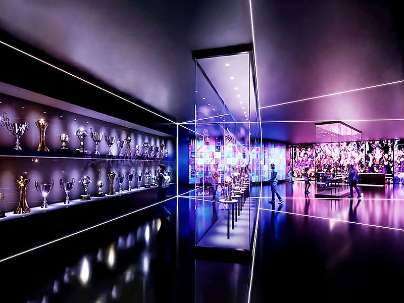
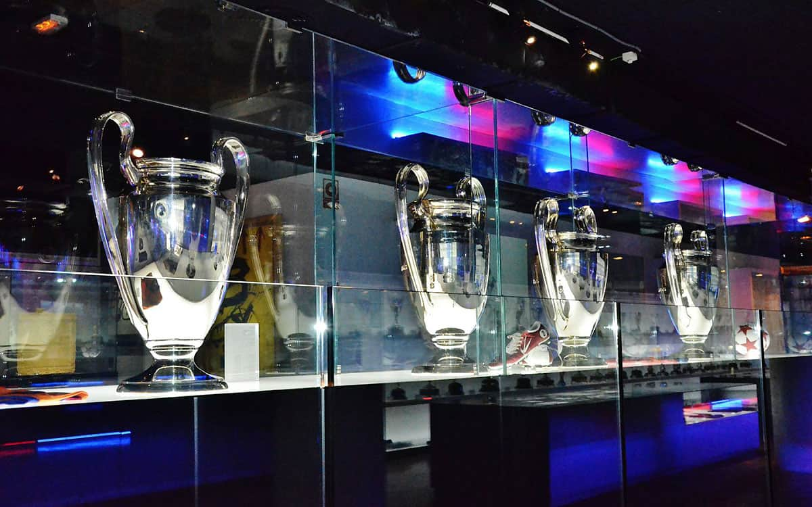
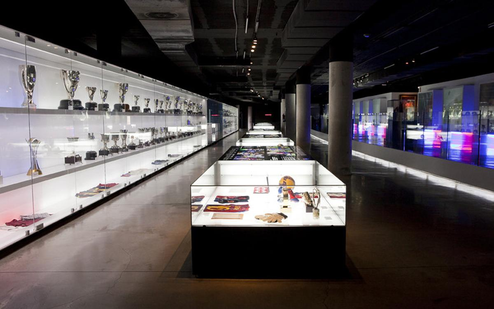
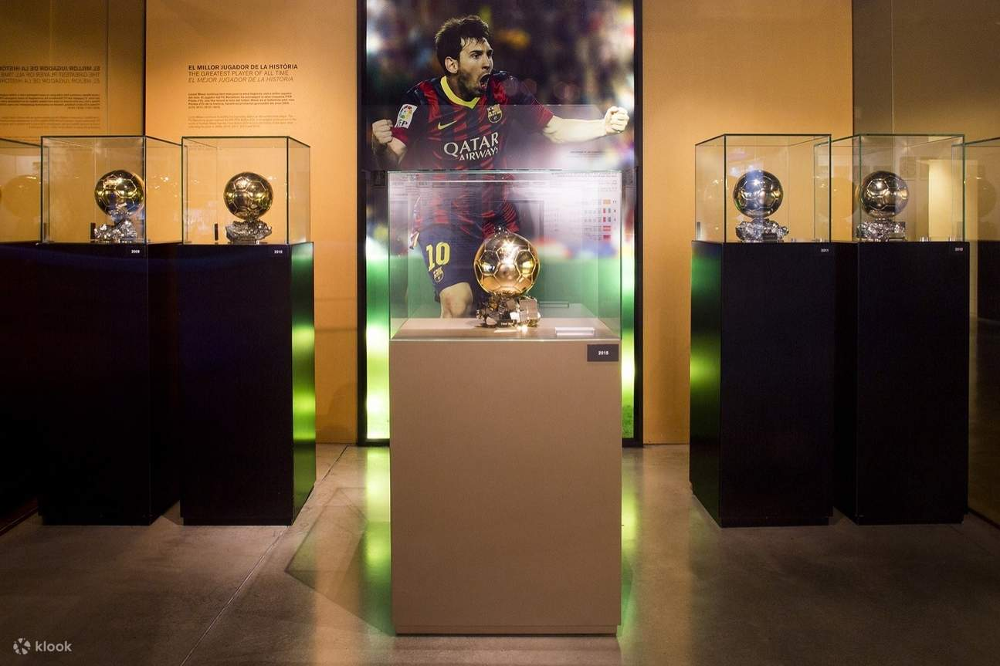

FC Barcelona Museum
The FC Barcelona Museum, located at the Camp Nou stadium, is one of the most visited museums in Catalonia. It showcases the club's rich history, trophies, memorabilia, and interactive exhibits that allow fans to experience the legacy of FC Barcelona.
Gallery
Explore our collection of photos and memorabilia from the club's rich history.



